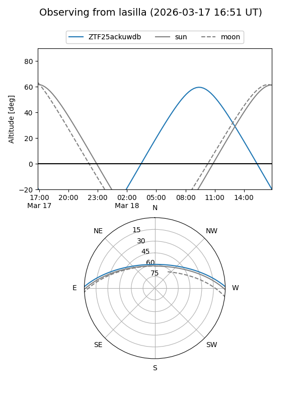
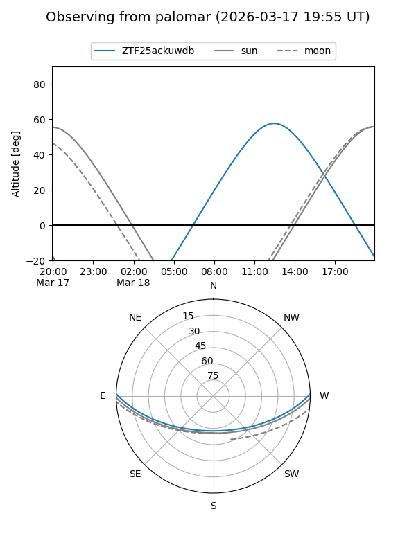

ZTF25ackuwdb
Target ZTF25ackuwdb at 2026-03-18 14:13
Aliases and brokers:
FINK: link
Lasair: link
ALeRCE: link
alt names
ZTF25ackuwdb (ztf,fink_ztf)
Coordinates:
equatorial (ra, dec) = 245.7954,+1.14416
equatorial (HMS+DMS) = 16:23:10.90,+01:08:38.96
galactic (l, b) = (15.0764,+33.05206)
Flags:
Photometry:
last ztfg=17.73, ztfr=16.97
1 ztfg, 1 ztfr detections
Lightcurve
Visibility


Additional plots